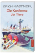

Wenn sich Lowe Alois mit Oskar, dem Elefanten, und der Giraffe Leopold zum Abendschoppen am Tschadsee trifft, kommt uber kurz oder lang die Sprache auf die Menschen, und uber die ist man schnell einer Meinung: Schreckliche Leute sind das, die mit ihrer Tuchtigkeit nichts anzufangen wissen. Zwar konnen sie tauchen wie die Fische, fliegen wie die Adler und klettern wie die Gamsen, doch bringen sie nichts anderes zustande als Kriege, Revolutionen und Hungersnote. Sie haben ihr Ungluck verdient. Nur um die Kinder ist es schade. Die tun den Tieren so Leid, dass sie endlich etwas unternehmen wollen. Die erste "Konferenz der Tiere" wird einberufen und aus der ganzen Welt stromen sie zusammen, um den Frieden unter den Menschen durchzusetzen. Bald wird den Konferenzteilnehmern klar, dass sie ein paar Tricks anwenden mussen, damit die Menschen sie auch ernst nehmen... nach einer Idee von Jella L